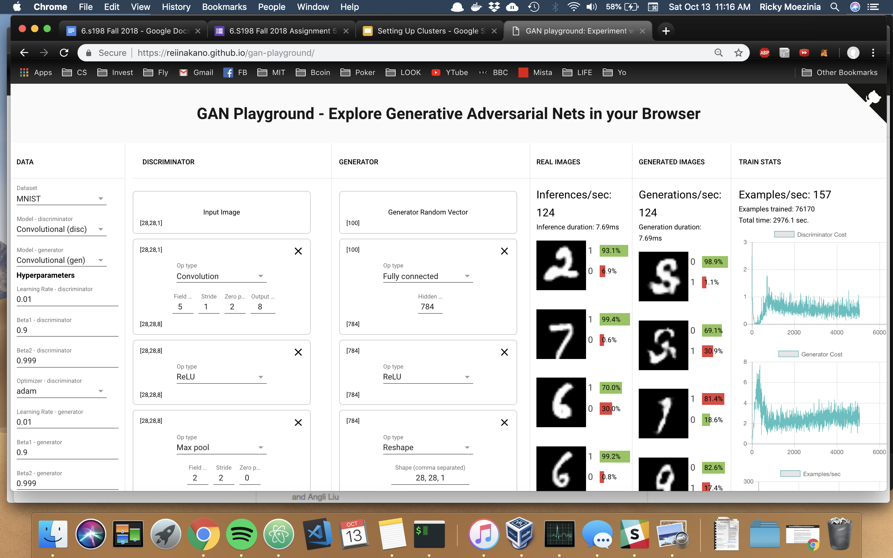

The Generator needs the second FC layer to transform the shape [256] output of the first FC layer so that the Reshape layer can convert the [784] nodes into a [28, 28, 1] which represents the output image that the Generator is generating. We need the FC layer to output a correctly sized image.
I had to use the convolutional model, with adam as the optimizer in order to generate images which looked at least a little bit real. After 77K examples trained, I got the below results. Despite the fact that the loss began to plato, this training run lasted around 40 minutes, most likely a result of using the adam optimizer instead of gradient descent. This also could have been caused by a bottleneck in network performance, if there are any dependencies on download speed.
I attempted to run the FC model with adam optimization, since SGD did not improve generation. I also tried doubling the learning rate from 0.01 to 0.02. The results are below; again, the generator's loss does decrease substantially however the images generated are not at all realistic, suggesting that the model itself may be the issue.
When training with the convolutional model, the generated digit images actually seem to come about quicker than with the FC model. There are very early signs and resemblances with digits, as the white parts become less blotchy and much more distinct. This is even after around 4 minutes of trainig; however, to become clear digits it takes a lot longer. I had difficulties trainig the Fully Connected model; the images generated never became realistic when using gradient descent.